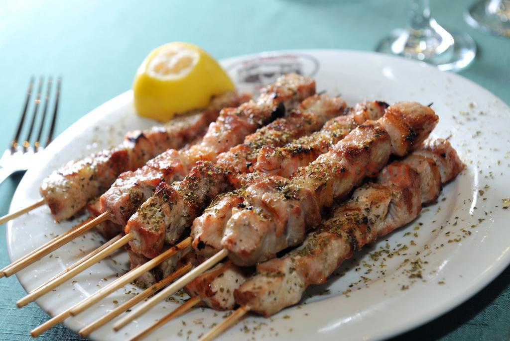

Home
Souvlaki

Description
A classic, street greek food that is easy to make and incredibly tasty to eat.!
Ingridients
- 500g pork rump
- 500g pork neck
- 40g vinegar,white wine
- 2 teaspoons salt
- 2 granulated sugar
- ⅓ teaspoons allspice
- ¼ cumin
- 1 teaspoon pepper
- 2-3 tablespoons olive oil
- 1 clove of garlic
- 1 tablespoon thyme
- 1 tablespoon oregano
Steps
- Cut the meat into small cubes, about 2 cm thick.
- In a bowl add the vinegar, salt, allspice, cumin, pepper, and 1 tablespoon of olive oil.
- Finely chop the garlic, add it to the bowl, and whisk well.
- Add the thyme and oregano, and whisk again.
- Transfer the meat to the bowl with the marinade and mix them very well with your hands.
- Cover the bowl with plastic wrap and refrigerate it for 3-4 hours.
- Take the bowl out of the refrigerator and remove the plastic wrap.
- Thread the meat pieces -one by one- onto 10 wooden skewers, making sure to leave some space between the pieces so they can be cooked through.
- Place a grill pan over high heat and let it heat up well.
- Drizzle the skewers with 1 tablespoon of olive oil and transfer them to the pan in 2 batches.
- Cook each batch for 5-7 minutes, turning the skewers over with a pair of tongs to cook them through on all sides. Do not flip them over all the time.
- Remove the pan from the heat and transfer the skewers to a serving platter.
- Serve with French fries, tzatziki sauce, pitas, lemon slices, and fresh oregano.